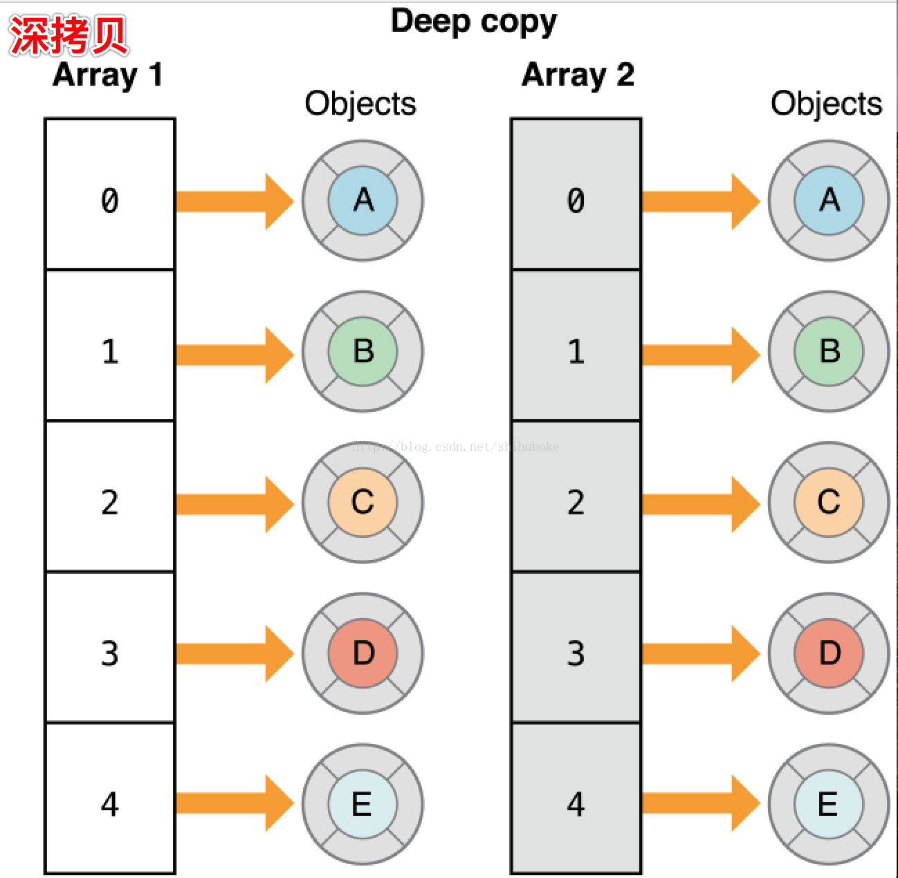

一、深拷贝概念
1.深拷贝:是直接拷贝整个对象的内存到另一块内存中。
2.在Objective-C中，通过两个方法 copy和mutableCopy可以执行拷贝操作，其中copy是获得一个不可变对象，而mutableCopy是获得一个可变对象。
3.并且两个方法分别调用copyWithZone和mutableCopyWithZone两个方法来进行拷贝操作，一个类必须实现copyWithZone或者mutableCopyWithZone，才能进行copy或者mutableCopy

二、集合的深拷贝代码实现
有两种方法:
第一个方法是
可以用initWithArray:copyItems:将第二个参数设置为YES即可深拷贝，如：
NSDictionary shallowCopyDict = [[NSDictionary alloc]initWithDictionary:someDictionary copyItems:YES];
如果你用这种方法深拷贝，集合里的每个对象都会收到copyWithZone:消息。如果集合里的对象都遵循NSCopying协议，那么对象就会被深拷贝到新的集合。如果对象没有遵循 NSCopying协议，而尝试用这种方法进行深拷贝，会在运行时出错。copyWithZone:这种拷贝方式只能够提供单层内存拷贝(one-level-deep copy)，而非真正的深拷贝。
第二个方法是将集合进行归档(archive)，然后解档(unarchive)，
如：
NSArray *trueDeepCopyArray = [NSKeyedUnarchiver unarchiveObjectWithData:[NSKeyedArchiver archivedDataWithRootObject:oldArray]];
注意：
第一种方式copyWithZone:这种拷贝方式只能够提供单层内存拷贝(one-level-deep copy)，而非真正的深拷贝。
第二种方式归档和解档才是实现真正的深拷贝。
one-level-deep copy 集合的单层深拷贝
这里需要区分一个概念性的问题：
如果在多层数组中，对第一层进行内容拷贝，其它层进行指针拷贝，这种情况是属于深拷贝，还是浅拷贝？对此，苹果官网文档有这样一句话描述：
/**
This kind of copy is only capable of producing a one-level-deep copy.
If you only need a one-level-deep copy, you can explicitly call for one as in Listing
*/
1.苹果认为这种拷贝不是真正的深拷贝，而是将其称为单层深拷贝(one-level-deep copy)。
2.如果集合里的对象都遵循NSCopying 协议，那么对象就会被深拷贝到新的集合。如果对象没有遵循 NSCopying 协议，而尝试用这种方法进行深拷贝，会在运行时出错。
三、浅拷贝、深拷贝、完全拷贝区别:
浅拷贝(shallow copy)： 在浅拷贝操作时，对于被拷贝对象的每一层都是指针拷贝。
深拷贝(one-level-deep copy)： 在深拷贝操作时，对于被拷贝对象，至少有一层是深拷贝。
完全拷贝(real-deep copy)： 在完全拷贝操作时，对于被拷贝对象的每一层都是对象拷贝